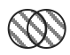

<div class="wrapper">
    <div class="sidebar">
        <div class="add-buttons">
            <div class="button z-depth-3" (click)="createDDComponent('upload')">
                <br/>upload
            </div>

            <div class="button z-depth-3" (click)="createDDComponent('union')">
                <br/>union
            </div>

            <div class="button z-depth-3" (click)="createDDComponent('intersect')">
                <br/>intersect
            </div>

            <div class="button z-depth-3" (click)="createDDComponent('filter')">
                <br/>filter
            </div>

            <div class="button z-depth-3" (click)="createDDComponent('select')">
                <br/>select
            </div>

        </div>
    </div>
    <div class="vis-container">

    </div>
</div>
